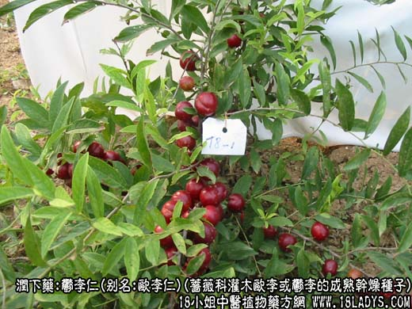
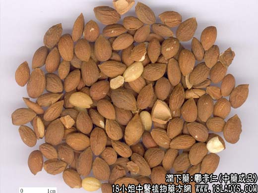
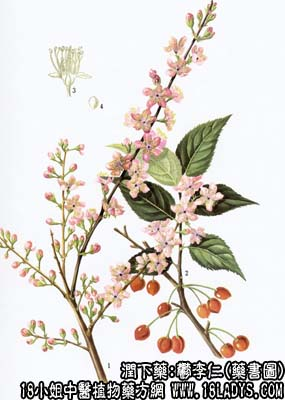

郁李仁为较常用的中药。《神农本草经》列为下品。原名“郁李人”。目前市售商品有两种，分为小李仁和大李仁。习惯以小李仁为正品。
别名：欧李仁、小李仁、李仁、大李仁。
来源：小李仁为蔷薇科植物灌木欧李或郁李、长梗郁李的成熟干燥种子。大李仁为山樱桃。截形榆叶梅，柄扁桃，显脉欧李，滇樱桃等的成熟干燥种子，野生或栽培。
产地：小李仁主产于辽宁海城，盖平，凤城，辽阳，内蒙古东部，河北省北部等地。小李仁主产于内蒙古、河北、山东、辽宁、吉林、黑龙江等省，此外山西、陕西、湖北等省亦有生产。
性状鉴别：小李仁略呈桃形，长约5~7毫米，最大横径约3~5毫米。表皮黄白色黄棕色或深棕色。顶端锐尖，基部钝圆，种皮极薄，尖端一侧有一线形种脐，钝端一侧为合点，自合点处发散出多数棕色脉纹（维管束），形成纵向不规则纹理。剥去外皮，可见白色子叶两片，气微味微苦。
大李仁性状与小李仁相似，唯颗粒稍大，长约6~10毫米，横径5~7毫米，其余均与小李仁同。
以粒小，饱满、均匀、不泛油者为佳。
主要成分：含苦杏仁甙、脂肪油。
药理作用：1、缓泻通便，为润滑性泻药，泻下作用比火麻仁略强；2、利尿。
炮制：生用，配方时捣碎。
性味：辛、苦、甘、平。
归经：入脾、大肠小肠经。
功能：润燥通便，利尿消肿。
主治：大便燥结、水肿胀满，小便不利，脚气等症。
临床应用：1、用于治疗习惯性便秘。常配其他润肠药（火麻仁、杏仁、柏子仁等），方如五仁汤，老人或产后的肠燥便秘、气虚便秘均可用，但孕妇则慎用。
2、用于治疗脚气水肿而大小便不畅者，配薏苡仁、赤茯苓、滑石等。
用量：3~12g。
处方举例：五仁汤：郁李仁9g（打）、火麻仁12g（研）、瓜萎仁9g（打）、甜杏仁9g，柏子仁9g，水煎服。
注：四川、广西、云南、贵州、甘肃、湖北等省，以食用“李”的种子作李仁用，呈扁卵圆形，似杏仁。
性味：与郁李仁不同，不应作郁李仁药用。